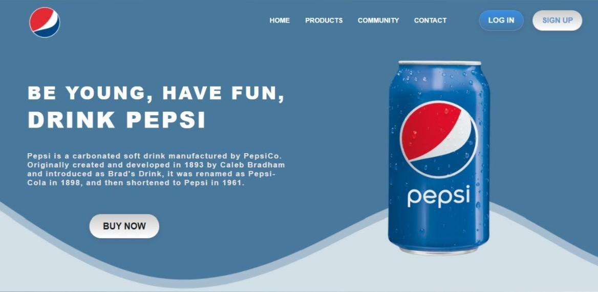

Introduction
1. Hi, I'm AYESHA UMER, a passionate front-end web developer with 1 year of experience. I specialize in creating modern and responsive websites that provide a seamless user experience.
2. My skills include HTML5, CSS3, JavaScript, and various front-end frameworks such as Bootstrap and React.
3. Throughout my career, I have worked on a variety of projects, ranging from small business websites to large-scale e-commerce platforms. I enjoy collaborating with clients and transforming their ideas into visually stunning websites that meet their goals and requirements.
4. As a continuous learner, I stay updated with the latest web technologies and trends to deliver modern and innovative solutions. I am always excited to take on new challenges and find creative solutions to complex problems.
5. I believe that effective communication and attention to detail are key to successful projects. I am a team player and enjoy working with other developers, designers, and stakeholders to create high-quality web experiences.
Projects
Project 1
Project 1 is a responsive webpage website It was built using HTML5, CSS3 and apply media quesries for responsive
Project 2
This is the single web page about pepsi .It is build using HTML5,CSS3 and also I have apply media Quesries for responsive.
Project 3
This is the web page about I designed .It is build using HTML5,CSS3 and also I have apply media Quesries for responsive.